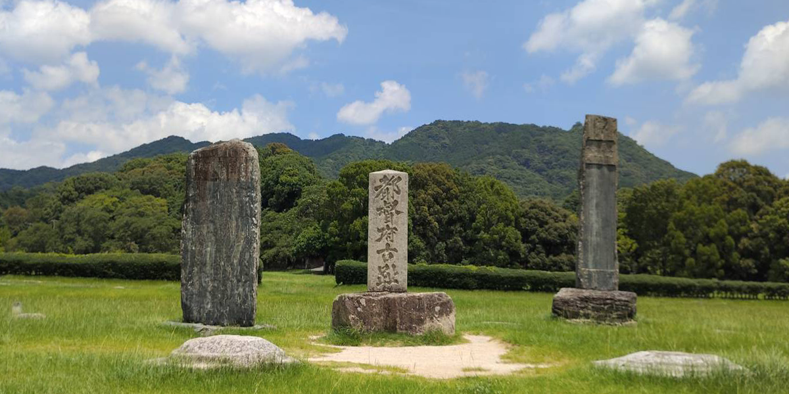
西の都を歩く
白村江の敗戦をきっかけに、日本は国の守りを大きく変えていきました。
ここ大宰府の地には、その激動の時代を今に伝える史跡が数多く残されています。
けれど、史跡は石や土を見るだけでは、その本当の姿はなかなか見えてきません。
その場所を歩き、風に耳を澄ませ、同じ地面を踏みしめてみる。
すると、教科書には書かれていない、その時代を生きた人たちの暮らしや願いが、
少しずつ浮かび上がってくるように思えます。
このページでは、史実を大切にしながら、実際に歩いて感じた風景を通して、
古代の人々の息づかいをたどっていきます。
歴史は、歩くことで見えてくる。
そんな歴史散歩へ、ご一緒しませんか。
時をかける壁 —— 水城跡（福岡県）
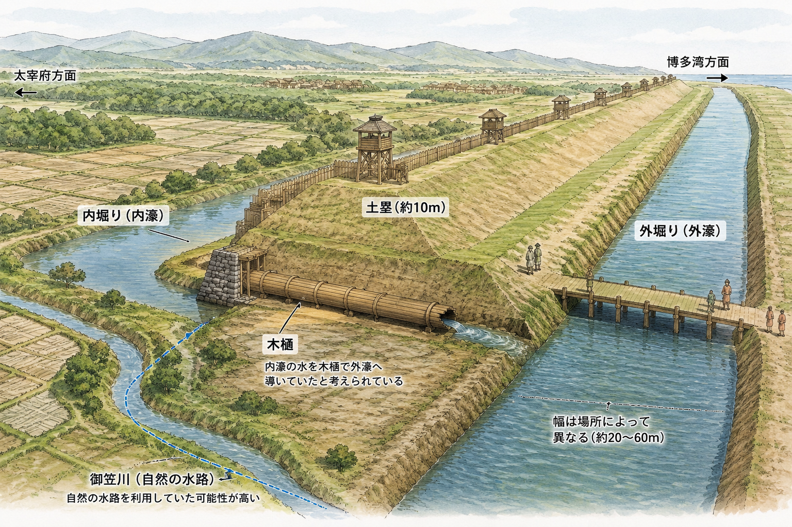
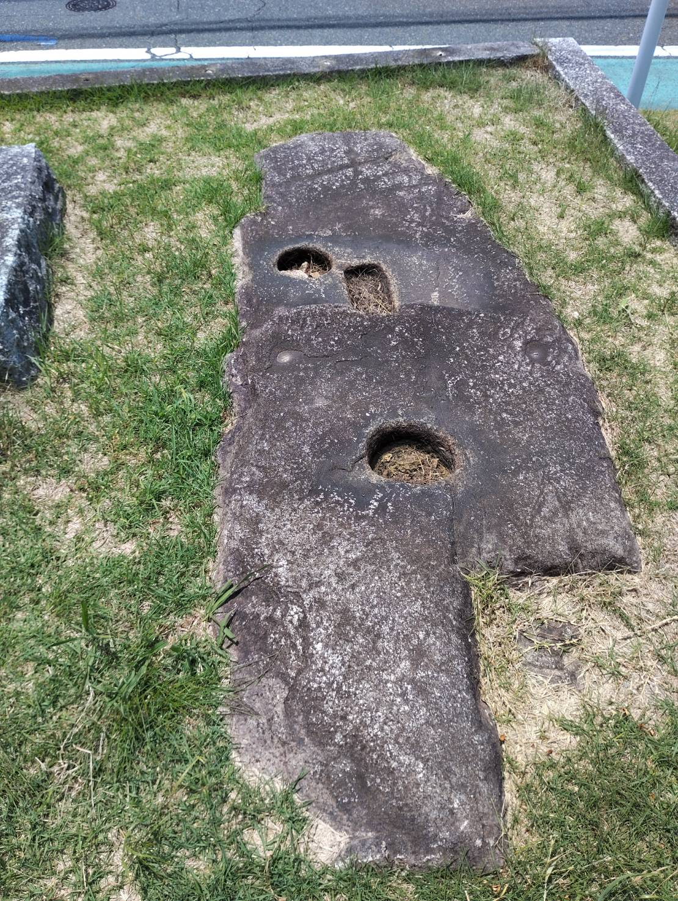
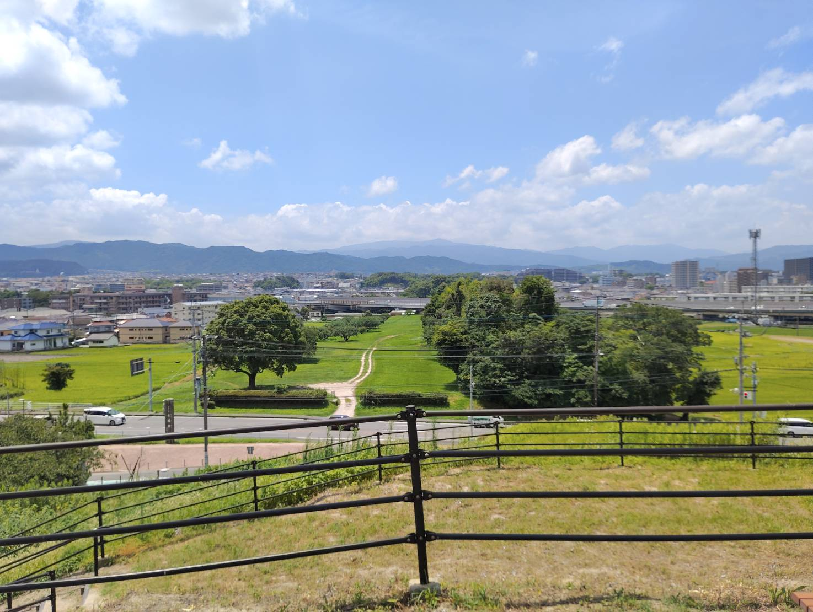
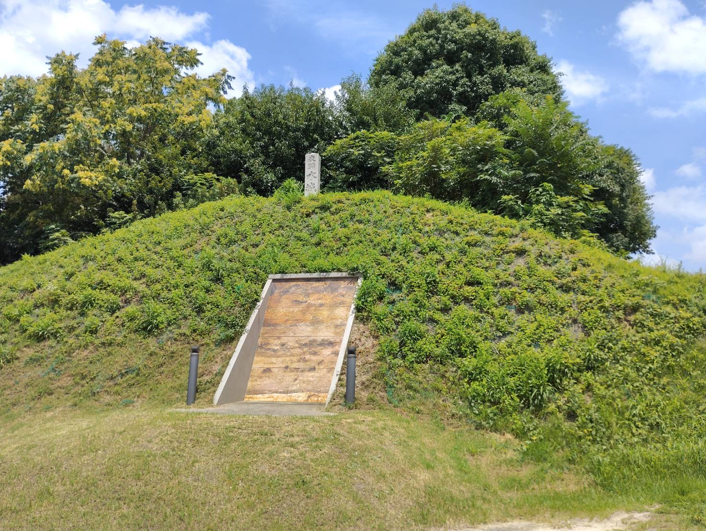
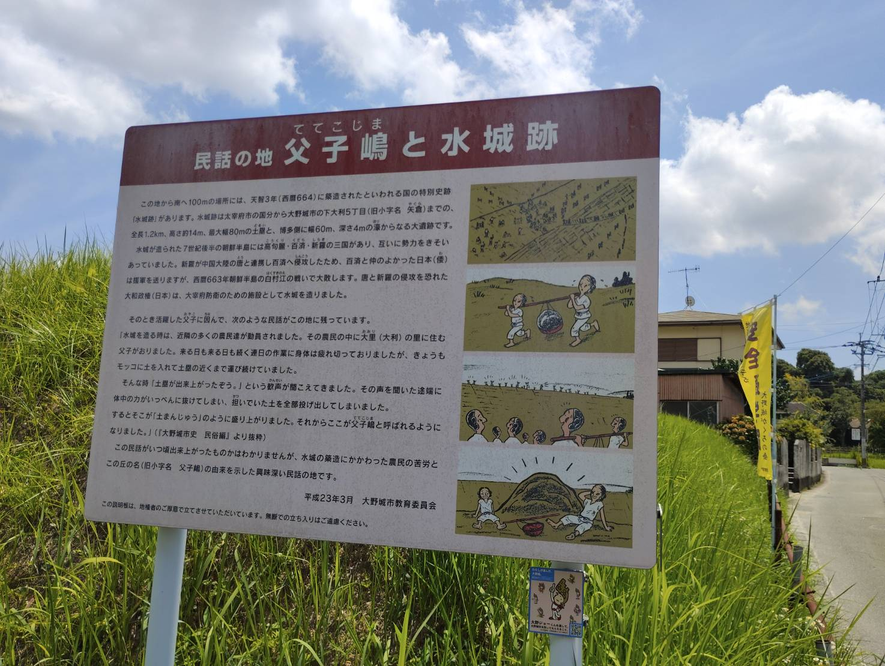
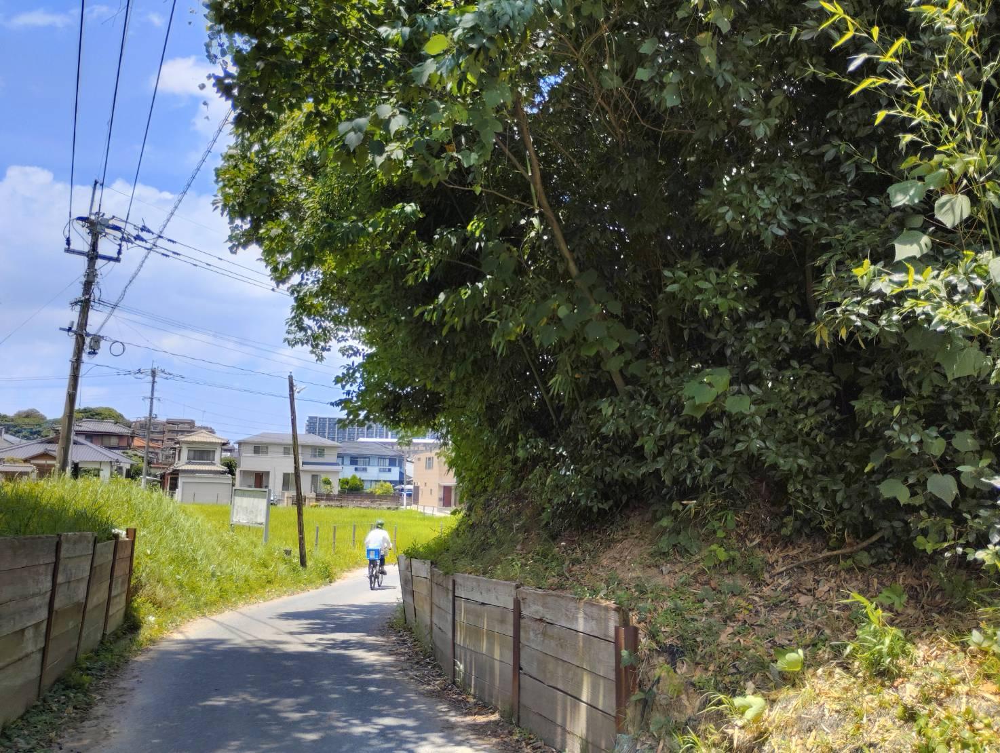
大宰府での旅の初回は、水城跡を選びました。大宰府を歩くにはまずここ！と決めていました。
都府楼前駅、ここからコミュニティバスは各方面に入っているので今回利用しました。
車窓が移ろっていくなか、私の頭には白村江の戦いが浮かんでいた。
663年、唐と新羅の連合軍に敗れた大和朝廷は、急速に防衛体制を整える。
北部にあった那津官家（なのつのみやけ）は、外交や軍事を担う重要な拠点だった。
しかし白村江の敗戦によって、防衛の考え方は大きく変わる。
朝廷の目は、東に四王寺山、西に片縄山――わずか1.2キロしか離れていない天然の要害へ向けられていた。
「ボトルネック」「防衛の要」
朝廷は、この狭い平野に国の命運を託した。
そう判断した朝廷は、防衛に適した山々に囲まれたこの地へ、大宰府の拠点を移したのではないだろうか。
やがて東門のバス停に到着した。
高台へ上がる前に、足元の案内板に「東門」の文字を見つける。
門そのものは残っていない。それでもここは、大宰府へ赴任する役人たちが通った場所なのだと思うと、
空気がほんの少しだけ古くなる。
そのまま展望台へ向かう。目の前には、片縄山へと続く雄大な土の壁が広がっていた。
今日の気温は36℃。うだるような暑さのなか、青空の下に連なる緑の丘は、息をのむほどに美しい。
けれど視線を落とすと、その高揚は一気にしぼむ。
土の壁を切り裂くように、国道や高速道路、そして西鉄の線路が横断しているのだ。
次に、西門近くへ向かう。東門からは見えなかったが、
ここにもJRの線路によって容赦なく断ち切られた土塁の切断面があった。
その傍らに、「特別史跡 水城跡」「土塁断面ひろば」と刻まれた石碑が、ぽつんと佇んでいる。
利便性と引き換えに、いやおうなしに奪われた古代の景観。
「歴史を笑うかのような光景だ……」
私は、線路に引き裂かれた傷口を見つめながら、少し苦々しい気持ちでそう呟いていた。
ところが、解説板を眺めているうちに、ふと気づく。
1300年前、大和朝廷が「ここを塞げば敵を通さない」と見定めた場所。
平野でいちばん狭いボトルネック。
それは、現代の土木から見ても「ここを通すのがいちばん効率がいい」という、
交通の一等地でもあったのだ。
古代の知恵と、現代のインフラ。
二つの時代の熱気が、同じ場所に吸い寄せられたのだと思うと、
この「分断」さえも、愛おしい歴史の地続きに見えてくるから不思議だ。
看板には、土塁を築くために「川の土を盛って一～二メートルかさ上げした」と記されていた。
一刻を争う突貫工事のなか、土を掘っては盛り、必死に形を急いだ古代の男たちの泥臭いドラマが、
その数行から立ち上ってくる。
西門へ向かう途中、「父子嶋（ててこじま）」と書かれた看板を見つけた。
そこには、水城完成の日にまつわる父子の伝承が紹介されていた。
「完成したぞ！」という大歓声を聞いた瞬間、緊張の糸が切れ、その場へへなへなと座り込んでしまった父子の姿。
担いでいた土を放り出し、文字どおり「灰」のようになって安堵した彼らの背中を思い浮かべると、
思わずクスリと笑ってしまう。同時に、温かい親近感が湧いてくる。
1300年前、迫り来る唐・新羅の脅威の中、祖国を守るため必死に工事へ携わった人々。
現代の私たちが、仕事終わりに「あぁ、やっと終わった！」と座り込む。
あの瞬間と、何も変わらない人間のリアルが、そこにある。
ようやく西門に到着した。ここは、かつて鴻臚館から外国の使節団が通った門だという。
その行列を眺めるように、私は今日一日の旅を振り返った。
吹き抜ける風に耳を澄ませば、もう一歩も動けないと笑い合った父子たちの笑い声が、
時を越えて聞こえてくるような気がした。
嵐の中の砦 —— 大宰府政庁跡を歩く(第一話)
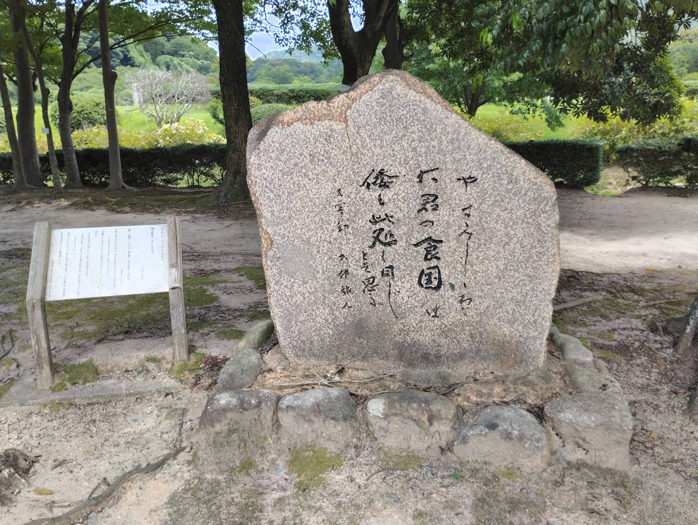
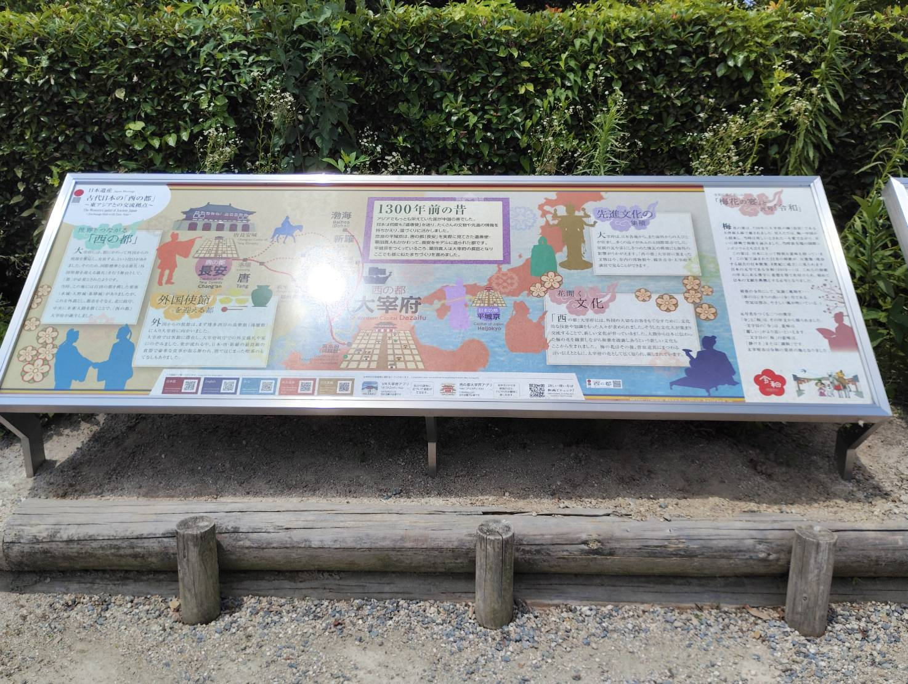
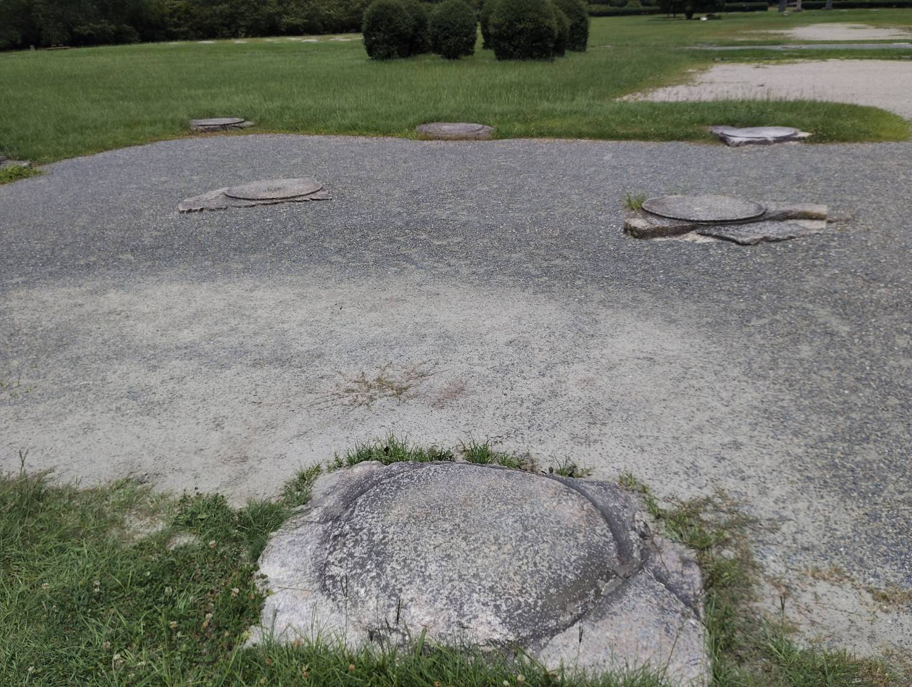
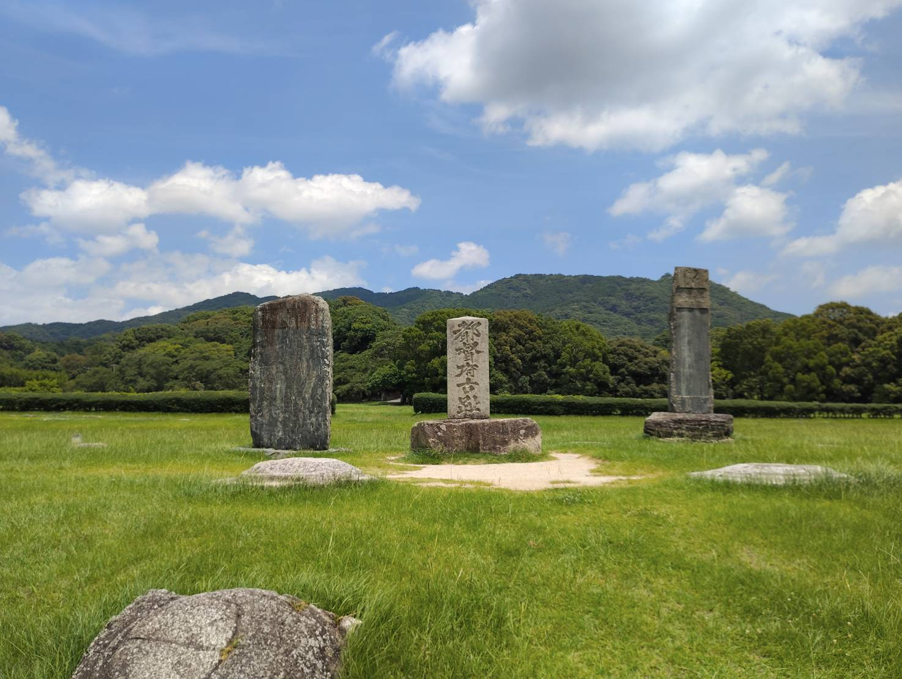
.png)
バスを降りてすぐ、木陰に立つ歌碑に目が留まる。
「やすみしし 我が大君の 食す国は 大和もここも 同じとぞ思ふ」
大伴旅人の歌である。都を遠く離れた地で詠まれたその一首は、
この場所が中央と深く結ばれた土地であったことを静かに伝えている。
歌を胸に、政庁跡へ向かって歩き始める。
日陰を離れた途端、夏の陽射しが容赦なく照りつけ、汗が首筋を伝った。
政庁跡へ向かう道は、思ったより静かで、思ったより広い。
ふと顔を上げると、四王寺山が圧倒的な存在感でそこに座していた。
古より変わらぬこの山の前では、私の輪郭が少し薄くなる。
振り返り、かつての朱雀大路を想像してみる。ここを異国の使節が通り、
役人たちが忙しげに行き交ったのだろうか。
そう思うと胸が少し高鳴る。
入口の脇にはVRがあり、スマホをかざすと、朱塗りの門が立ち上がり、
整った身なりの人びとがそこを行き来する。
――たしかにここは「西の都」だったのだ、と頷きたくなる。
けれど画面を閉じると、目の前には広い草地と夏の空が広がっていた。
さっきまでの賑わいは消え、辺りは驚くほど静かである。
この静けさは、現代から古代へと思いを馳せるには、不思議なくらい心地よい。
そして、ふと違和感が残った。
――本当に、この立派な都から始まったのだろうか。
白村江の敗戦の後、この地に最初に求められたのは、華やかな都ではなく、国を守るための拠点だった。
発掘調査では、初期の政庁は柱を直接地面に立てた掘立柱建物だったことが分かっている。
石ではなく土。恒久ではなく、まず必要に迫られて築かれた政庁だった。
ゆっくりと歩きながら足元へ目を落とす。草の下の土は思ったより柔らかく、踏みしめるたびに靴底がわずかに遅れる。
千三百年前、この土の上を急ぎ足で行き交った人びとも、同じ感触を足裏に覚えていたのだろうか。
眺めるだけでは分からないものが、歩くと分かる。ここは、そういう場所だった。
広い政庁跡の中央には、三つの石碑が静かに立っていた。最初は古代から残るものかと思ったが、そうではなかった。
明治から大正にかけて、この大宰府跡を守り伝えようという願いを込めて建てられたものだという。
古代には国を守るために人びとが集まり、時代が移ると今度は史跡を守ろうとする人びとが現れた。
この場所では、「守る」という思いだけが、千年を超えて受け継がれてきたのかもしれない。
石碑の前から少し歩いて振り返る。広い政庁跡には人影も少ない。
静かなこの景色からは想像しにくいが、かつてここは国の命運を支える最前線だった。
この地を最初に守ったのは、防人たちだった。やがて律令国家の仕組みが整うにつれ、
その役目は軍団へと受け継がれていく。大宰府を守る人びとの姿も、時代とともに少しずつ変わっていった。
風が吹き、汗が少しだけ乾いていく。そんな何気ない風の中で立ち止まっていると、
私の頭に浮かんだのは武器の音ではなく、人びとの食事だった。
乾飯（ほしいい）を水で戻し、静かに口へ運ぶ。味わうというより、生きるための食事。
その一口が、今日を生き、明日へ命をつなぐ力になっていたのだろう。
旅人の歌碑にあった「食す国は、大和もここも同じ」という言葉が、ここで別の重さを帯びる。
「同じ」なのは国の名ではない。一口ずつ命をつなぎながら、この国を支え続けた人びとの営みだったのではないだろうか。
来た道をゆっくり戻り、もう一度歌碑の前で足を止めた。
「やすみしし 我が大君の 食す国は 大和もここも 同じとぞ思ふ」
歩き始めたときとは、不思議と歌の響きが違って聞こえる。
華やかな西の都の姿だけではなく、その礎となった防人たち、政庁を築いた人びと――そして、
その記憶を伝えようとしてきた人びとの時間が、この歌の向こうに静かに重なっているように思えた。
シルクロードからの風 —— 西の都を歩く(第二話)
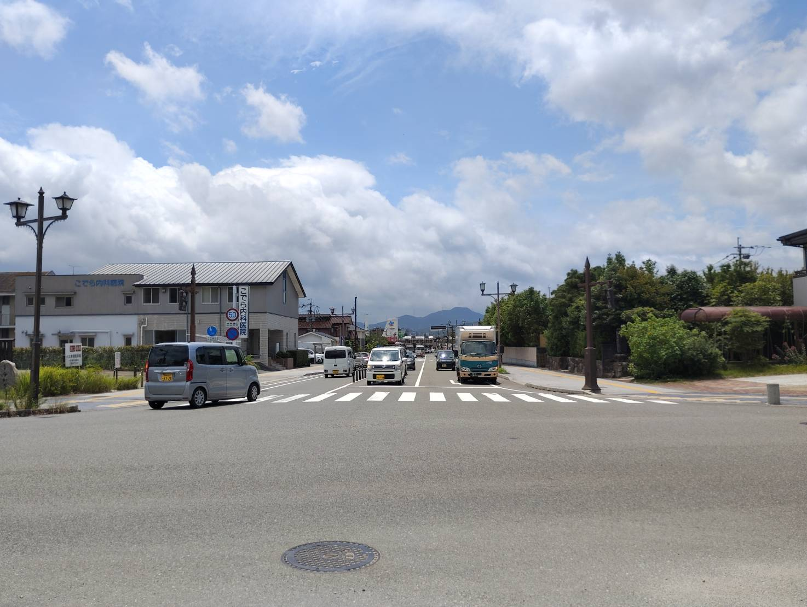
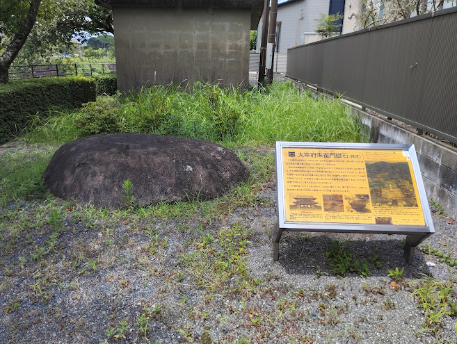
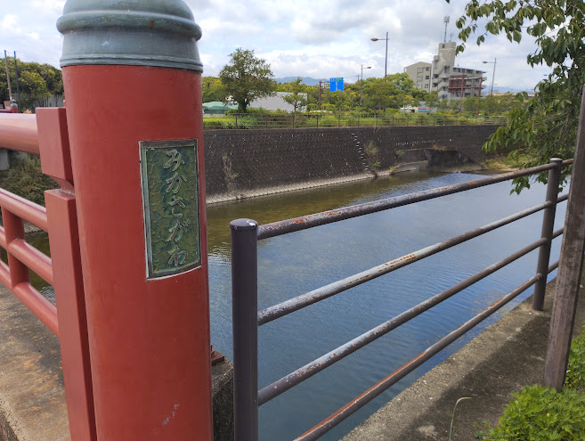
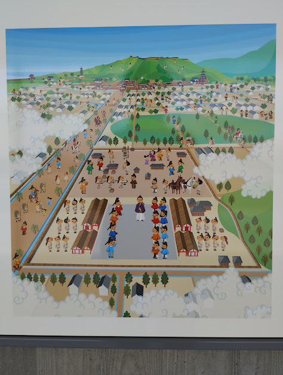
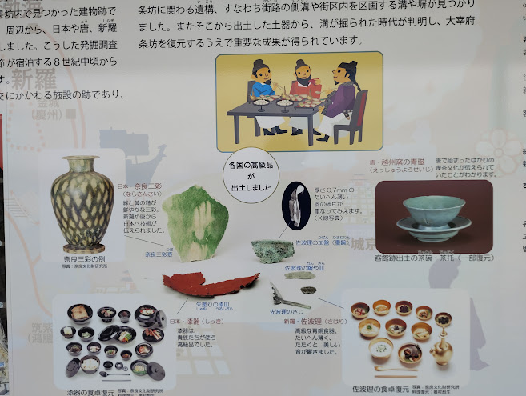
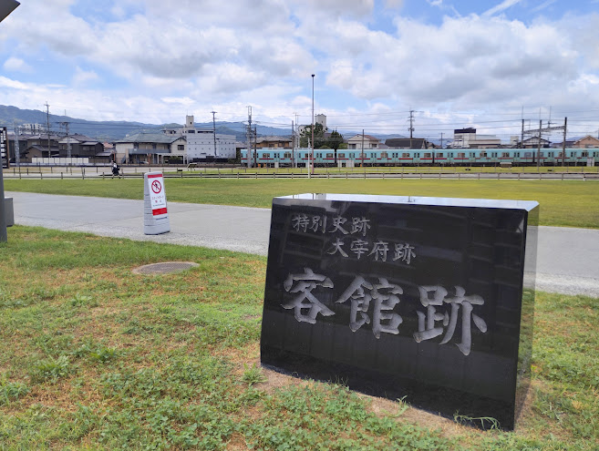
今度は、この大宰府が最も華やかだった時代を歩いてみることにした。
もう一度VRを起動する。
目の前には朱雀門が高くそびえ、その先へ朱雀大路がまっすぐ伸びている。
道の両側には整然と区画された町並みが続き、人々が忙しく行き交う。
ここが「西の都」と呼ばれた大宰府の姿なのだろう。
画面の中で、ふと左側に客館跡が見えた。
外国からの使節を迎えた場所――。
そこへ行けば、この時代の華やかさが少し見えてくるかもしれない。
私は朱雀大路を歩き始めた。
歩き出すと、そこにあるのは静かな住宅街だった。
不思議なことに、その町並みは古代の道幅を崩すことなく続いている。
アスファルトの道を歩きながら、ふと足元を見る。
今、私が踏みしめているのは固い舗装道路だ。
けれど奈良時代、この道は土だった。夏の日差しは今と変わらず照りつけていただろうが、
足裏に伝わる感触はまったく違っていたに違いない。
やがて御笠川に架かる朱塗りの橋へたどり着く。
橋の手前には朱雀門跡の案内板と礎石が静かに残されていた。
後から調べて分かったことだが、このあたりまでが政庁の区域で、道の両側には役所が並び、
その南端に朱雀門が建っていたという。
橋の上で足を止め、水面を眺める。
もし私がこの時代に生まれていたなら、この橋を渡ると少し肩の力が抜けたのではないだろうか。
政庁での務めを終え、人々の暮らしがある町へ帰っていく。
そんな安堵が、この川には今も静かに流れているような気がした。
風が吹く――。
その瞬間、私の横を一人の役人が足早に通り過ぎていったような気がした。
思わず振り返る。
もちろん、そこには誰もいない。
この川は、水城の堀を満たしたとされる川の上流でもある。
本当に、この水だけであれほど広大な堀を満たすことができたのだろうか。
そんな疑問が頭をよぎる。けれど、その答えはまた水城を歩くときに考えてみたい。
橋を渡ると、目の前には国道三号線が大きく広がっていた。
九州を縦断する大動脈。片側三車線を車が絶え間なく走り抜ける。
さっきまで政庁跡で感じていた静けさは、一瞬で令和の現実へと引き戻された。
現在の道はここで少し右へ曲がる。
ここで古代の朱雀大路とは別れ、私は左へ折れた。
途中、榎社の脇を通る。
菅原道真ゆかりの場所だが、今日は立ち寄らない。
また別の日に、ゆっくり歩くことにしよう。
西鉄電車と並ぶ道をしばらく進むと、突然、住宅街が途切れた。
広い芝生が目の前いっぱいに広がる。
ここが客館跡だった。
大宰府政庁から約一・一キロ。
地図では近く感じる距離も、真夏の炎天下では思いのほか長い。
目的地へ着いた安堵とともに、背中の汗が一気に噴き出した。
客館は、外国からの使節を迎えるために造られた施設である。
唐や新羅から訪れた人々はここに滞在し、大宰府は東アジアへ開かれた外交の窓口として栄えた。
芝生の上には建物は残っていない。
けれど展望所があり、案内板へ目を向けると、
発掘された区画図、復元図、そして奈良三彩や新羅の土器、青磁の器、漆器――。
東アジア各地からもたらされた品々を見ていると、この場所が国際交流の舞台だったことがよく分かる。
この頃、大宰府には市場も開かれ、多くの人たちが暮らしていた。
外交を担う上級役人。
市場で商いをする商人。
物を運ぶ人。
毎日の暮らしを支える職人たち。
華やかな西の都の姿は、そうした一人ひとりの営みに支えられていたのだろう。
ふいに電車が走り抜ける音が響いた。
顔を上げると、西鉄電車が客館跡のすぐ横を駆け抜けていく。
千三百年前、この場所には海を渡って外国の使節が訪れた。
今は電車が人々を運び、同じ場所を行き交っている。
時代は変わっても、この場所が人と文化を結ぶ場所であり続けていることは変わらない。
私はもう一度、静かな芝生を見渡した。
目の前にあるのは穏やかな公園である。
けれど心の中では、朱雀大路を行き交う人々の足音や異国の言葉が、風に乗ってかすかに聞こえてくるような気がした。
そして、御笠川の橋の上で、私の横を足早に通り過ぎていったあの役人の姿が、もう一度頭に浮かんだ。
今ごろ、その人は妻や幼い子どもと一緒に畑へ出て、夕暮れまで土を耕しているのだろうか。
朝は役所で働き、午後は家族とともに土に向かう。
そんな何気ない毎日を繰り返しながら、
この「西の都」を支えていた人たちがいた。
歴史に名を残した人だけではない。
橋ですれ違った、あの一人の役人のような人たちがいたからこそ、
この華やかな都は生きていたのだと思う。
そう考えながら帰り道を歩いていると、
古代は遠い昔の出来事ではなく、人が確かに暮らしていた時間なのだと、少しだけ身近に感じられた。
静かなる都 —— 大宰府政庁、その終焉を歩く(第三話)
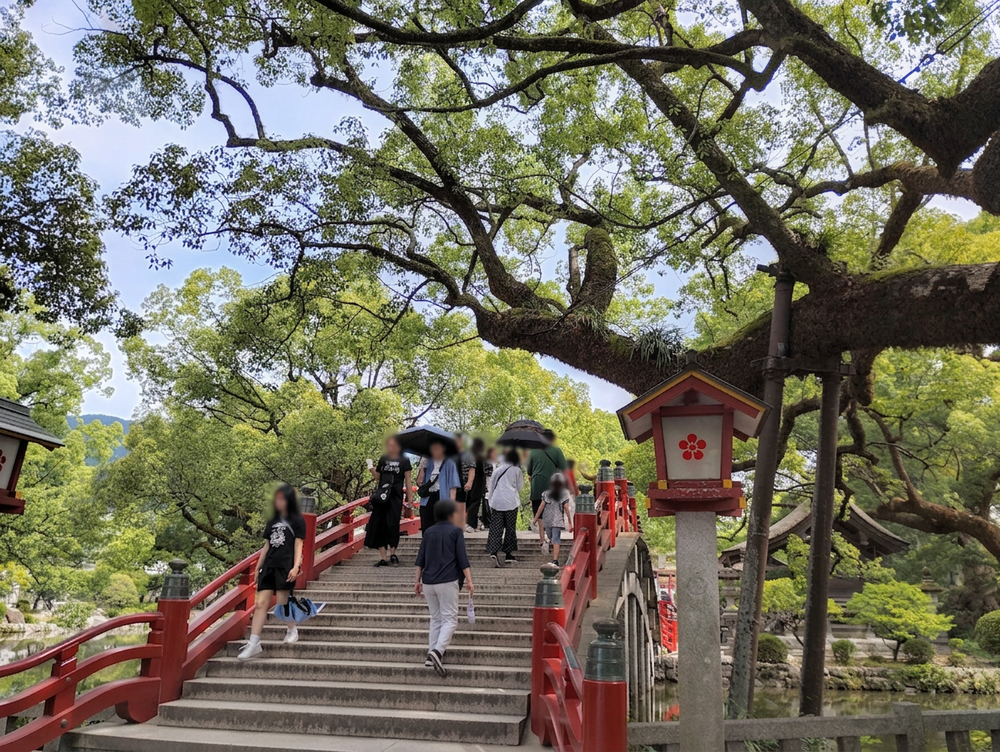
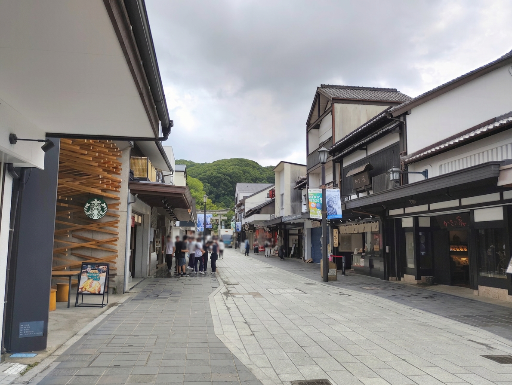
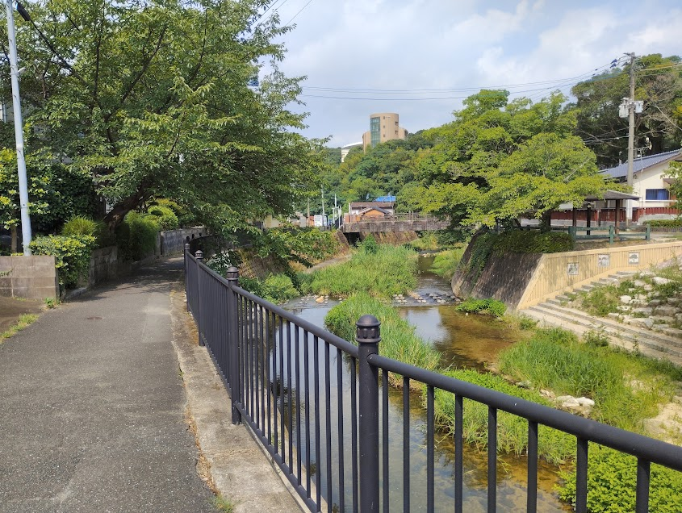
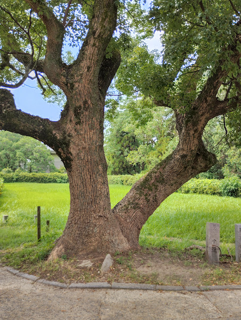
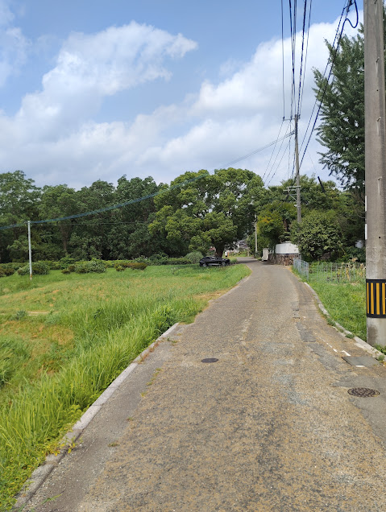
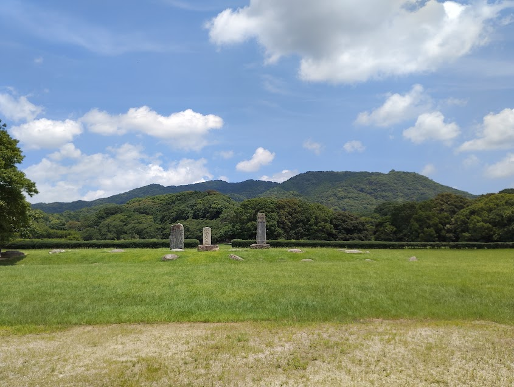
客館跡を歩いたあと、一つの疑問が心に残っていた。
あれほど華やかだった「西の都」は、
なぜ静かに歴史の中へ姿を消していったのだろう。
その答えを探したくて、私は太宰府天満宮から歩き始めることにした。
参道には今日も多くの人が行き交っている。
修学旅行の学生たち。
海外から訪れた観光客。土産物を手に笑い合う人々。
千年以上の時を越えても、この町は今なお人を惹きつけている。
ふと耳を澄ます。
昨日まで聞こえなかったミンミンゼミが鳴いていた。
季節は確かに前へ進んでいる。
その声を聞きながら、私は御笠川へ向かった。
川の流れは、千三百年前と変わらず静かだったのだろうか。
この川を眺めていると、華やかな大宰府にも終わりがあったことを思い出す。
外交の中心として栄えた都。
外国の使節を迎え、東アジアと日本を結ぶ玄関口だった大宰府。
しかし時代は少しずつ変わっていく。
正式な外交使節が訪れる時代は終わり、
海を渡ってやって来るのは、商人たちと変わっていった。
人も物も、そして富も、少しずつ博多へと移っていく。
交易の中心が港へ移るにつれ、大宰府政庁が担っていた役割も、静かにその姿を変えていった。
防人の姿も消え、かつて国を守るために築かれた防衛体制も歴史の中へ溶け込んでいく。
そして武士の時代を迎えるころ、大宰府政庁は「西の都」としての役目を終えていった。
私は御笠川を離れ、観世音寺の裏手へ向かう。
車も通る細い道を歩くと、一本の大きな木が静かに立っている。
私はこの木の前に立つと、いつも幹へそっと両手を添える。
千三百年という長い時間を、この木は見続けてきたのだろうか。
ここへ手を当てると、その時代を生きた人たちの声が、少しだけ聞こえてくるような気がする。
静かに目を閉じ、もう一度歩き始める。
やがて大宰府政庁跡へ着いた。
芝生は風に揺れている。
その景色を眺めていると、目の前の芝生がゆっくり消え、
まだ最初の掘立柱が建ち始めたばかりの頃の政庁が、心の中に浮かんできた。
この場所には、多くの人がいた。
国を守ろうとした人。
外国から訪れた人。
都を築いた人。
そして、その暮らしを支えた名もなき人々。
時代は移り、大宰府政庁はやがて人々の記憶から少しずつ忘れられていった。
それでも、この場所は消えなかった。
江戸時代になると、「さいふまいり」は多くの人に親しまれ、旅の目的地の一つとなった。
そして大正時代には史跡保存が始まり、多くの研究者や地域の人々の努力によって、
この場所は未来へ受け継がれてきた。
多くの研究者が歴史の断片を拾い集めてくださったように、
大宰府もまた、多くの人たちの情熱によって今日まで守られてきたのである。
あの日、大宰府政庁跡を歩いたとき、私が耳を澄ませたのは、ただ風の音ではなかった。
この場所で生き、守り、築き、そして伝えてきた人々の思いだったのだと思う。
足元では、芝生が風に揺れている。
そして、その向こうから、今年初めて聞いたミンミンゼミの声が響いてきた。
千三百年前の夏も、きっと同じように鳴いていたのだろう。
ここは、気持ちのいい場所だ。
いつも優しい風で迎えてくれる。
国分寺の断片 —— 礎石に残る祈りの気配
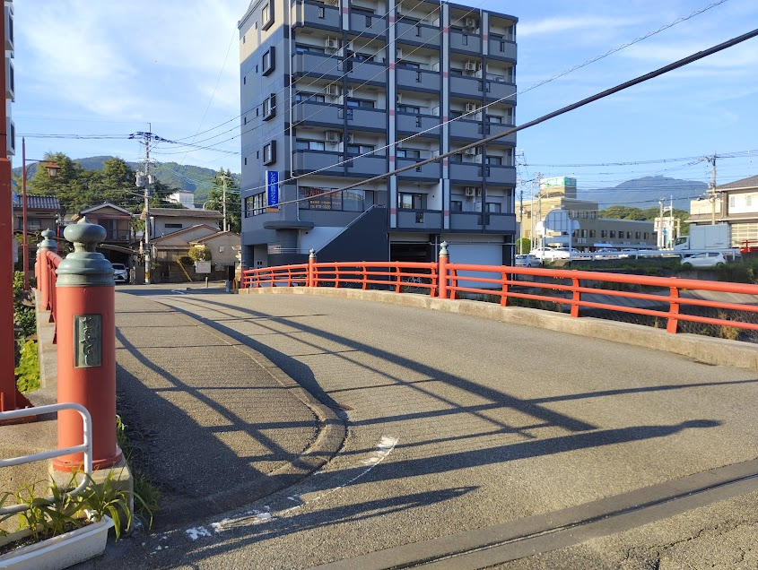
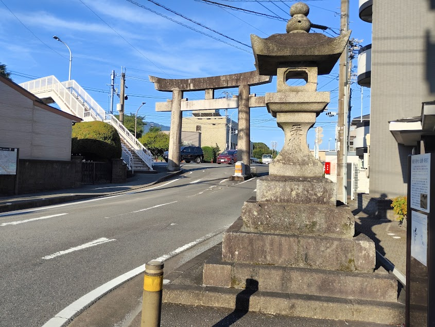
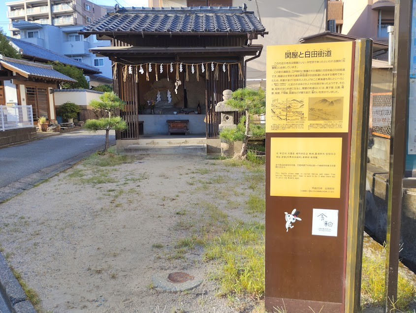
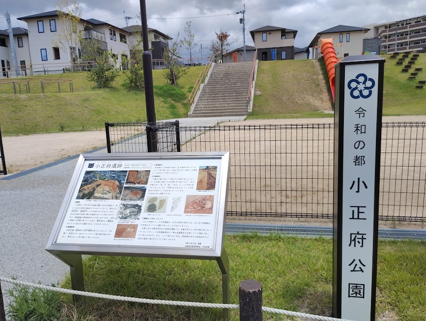
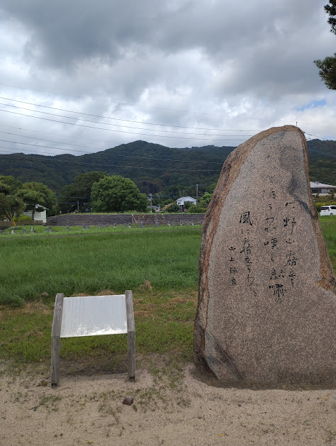
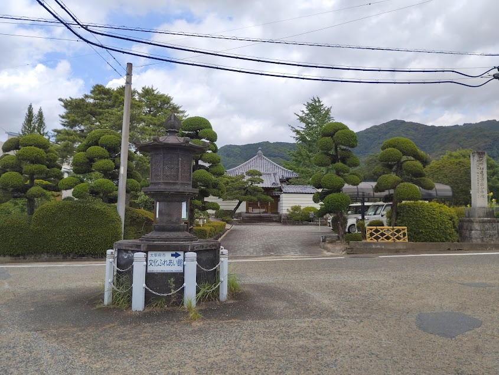
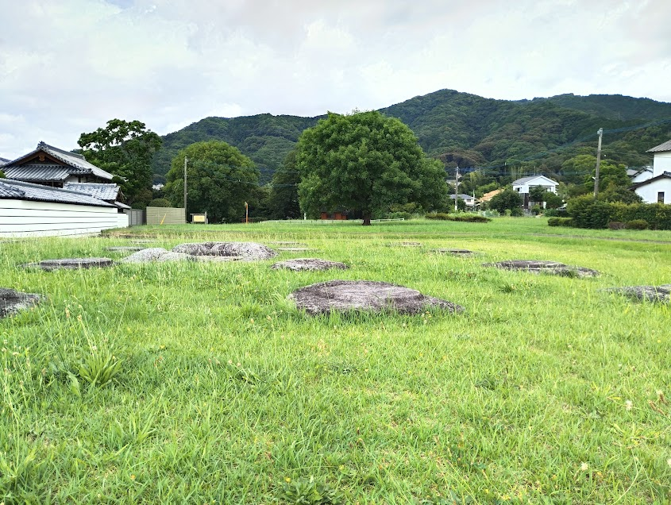
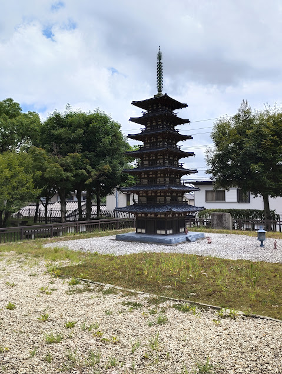
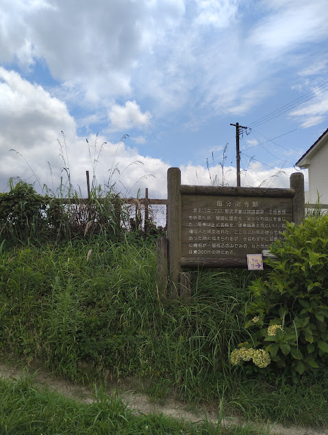
今回は、国分寺を訪ねることにした。
都府楼前駅から歩いて約一・七キロ。
地図で見れば、それほど遠い距離ではない。
だが、真夏の坂道は、その一・七キロを思った以上に長く感じさせる。
それでも歩こうと思った。
歩いてこそ、この地に刻まれた時間に出会える気がしたからだ。
駅を出ると、ほどなく朱塗りの橋が見えてくる。
眼下を流れる御笠川は、今日も静かに夏の光を映していた。
橋を渡ると、一の鳥居が立っている。
ここは日田街道と「さいふまいり」の道が分かれる場所である。
江戸時代、この道は黒田藩によって整えられ、
多くの人々がこの鳥居を目印に太宰府天満宮を目指したという。
案内板を読み終えると、それまで何気なく見ていた道が少し違って見えてきた。
私もまた、二百年以上前の旅人たちと同じ道を歩いているのだ。
今日は鳥居をくぐらず、左へ折れる。
国分寺へ向かう道である。
しばらく歩くと、右手に小さなお堂が現れた。
長い年月、この道を行き交う人々を見送り、迎えてきたのだろう。
案内板には、享和二年（一八〇二）、旅人・菱屋平七が『筑紫紀行』に残した言葉が紹介されていた。
「往来の人のしげきこと東海道も言へり」
当時、この道は東海道にもたとえられるほど、多くの人々が行き交う街道だったという。
今は静かな住宅街となり、その賑わいを想像することは難しい。
それでも、旅人もまた、この景色を眺めながら国分寺への分かれ道を通り過ぎたのだろうか。
そんなことを考えながら坂道を上った。
照り返しは強く、額から汗が流れ落ちる。
ゆっくり坂を上っていくと、新しく整備された公園が姿を現した。
「小正府遺跡」の案内板の前で足を止める。
今は穏やかな住宅街だが、この場所では古代大宰府で使われる瓦や金属製品が作られていたという。
華やかな政庁の陰には、それを支えた人々の暮らしと技術があった。
太宰府は歩くほどに、歴史が少しずつ姿を現してくれる。
再び坂道を上る。
やがて、道路の中央に一基の石燈籠が姿を現した。
東大寺大仏殿前の八角燈籠を模して造られたもので、
筑前国分寺が総国分寺である東大寺と深く結ばれていたことを今に伝えている。
車はその脇を静かに迂回して走り去っていく。
その手前には、小さな国分天満宮が鎮座していた。
鳥居をくぐると、左手に大きな歌碑が建っている。
刻まれているのは、『万葉集』巻五、山上憶良の歌である。
歌碑から顔を上げると、本堂の向こうには四王寺山の緑豊かな稜線が広がっていた。
あの山には、日本最古の朝鮮式山城とされる大野城が築かれた。
憶良は大野山に立つ霧へ、亡き妻への深い悲しみを重ねて歌った。
今も変わらぬ山の姿を眺めていると、その歌が少しだけ身近に感じられた。
国分天満宮を後にし、目の前の筑前国分寺へ向かう。
境内には五重塔跡が残され、大きな礎石が静かに並んでいた。
その石は、かつてここに壮大な塔が建っていたことを、何も語らず伝えている。
天平十三年（七四一）、聖武天皇は国家鎮護を願い、
全国の国ごとに国分寺と国分尼寺を建立する詔を発した。
筑前国分寺も、その一つとして建立された寺である。
礎石を見つめていても、塔の姿を思い描くことは難しい。
そこで、大宰府史跡文化ふれあい館へ向かうことにした。
国分寺から歩いて三分ほど。
復元された七重塔模型は、十分の一の大きさでも約五・二メートルあった。
礎石だけでは想像できなかった塔の高さや美しさが、目の前に立ち上がってくる。
ふれあい館を後にすると、もう一度国分寺の前へ戻る。
今度は坂を下り、国分尼寺跡を目指した。
静かな住宅街の中に、「筑前国分尼寺跡」と記された案内板が立っていた。
華やかな伽藍は失われても、この場所には確かに尼寺があった。
国分寺とともに、人々の祈りを支え続けてきた場所である。
国分尼寺跡を後にし、もう一度四王寺山を振り返る。
街道を歩いた旅人、大宰府を支えた人々、そして亡き妻を想い、
一首の歌を残した山上憶良。
歩いてこそ、この地に刻まれた時間に出会えた。
帰り道、四王寺山は行きに見たときと、少し違って見えた。